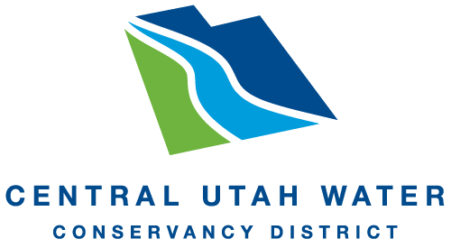

Reliable water
A supply families and farms can count on, in wet years and dry.

Juab CountyEast Juab County · A Community Water Conversation
Nephi, Mona, and the farms and families of East Juab County are shaping a plan for the next 75 years of water. This is where we listen — and report back what the community tells us it values most.
Why values come first
Following the approach pioneered by Envision Utah’s statewide Water Values Study, we start by understanding the beliefs beneath the preferences. That’s what lets a plan hold up across decades of change. Here is what we are listening for in East Juab County.
A supply families and farms can count on, in wet years and dry.
Keeping a vibrant farming community as growth arrives from the north.
Water that stays within reach as new infrastructure is built.
Growth that matches what our water can actually support.
Live results · Updated as surveys close
Results are shown in aggregate to protect every respondent’s privacy. Priority groups — irrigation companies and large agricultural users — are surveyed directly and reported here only as combined totals. The figures below are illustrative placeholders until the first survey window closes.
“When you think about our water future, how concerned are you about…”
Awaiting first survey window — bars will populate as data arrives.
How residents feel about incoming growth
Responses by stakeholder segment
The foundation
The Highline Canal Enclosure Project will conserve roughly 8,000 acre-feet of water each year by eliminating evaporation and seepage. That water is the basis of this plan. How it is shared between homes, farms, and future growth is exactly what the community conversation will decide.
Add your voice
Some surveys are open to everyone. Others go directly to irrigation companies and large agricultural users, by invitation, so we can hear from the people whose livelihoods depend most on this water.
Open community survey. Two minutes, and it shapes the plan directly.
Invited water users receive a private link by email, or a paper survey at district and company meetings.